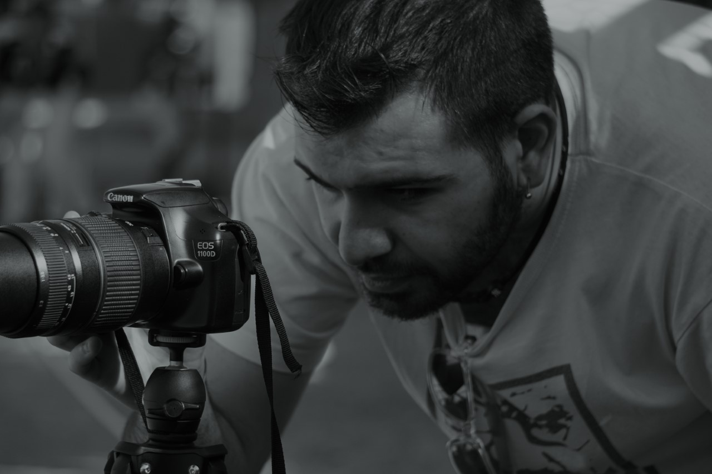
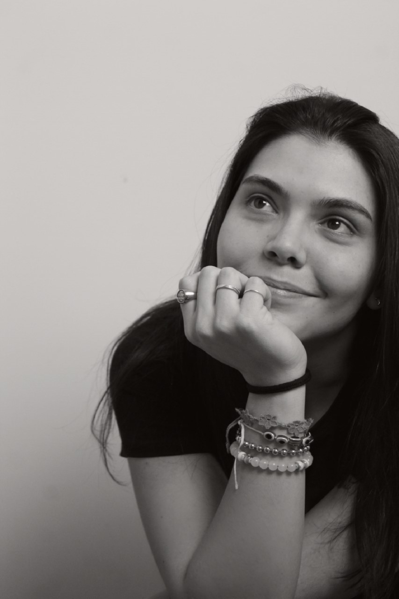

Riccardo Landi: Cresciuto con la passione del cinema, ho gravitato nell’ambiente del videomaking sin dall’adolescenza come amatore, imparando i primi rudimenti della professione da autodidatta.
Nel 2018 ho frequentato un corso professionale specializzato nel campo del videomaking tenuto al centro di formazione professionale Insegno, approfondendo le mie conoscenze sulla videoproduzione.
Da allora, ho offerto i miei servizi alla F.I.B.S. (Federazione Italiana Baseball e Softball) come fotografo e, appunto, videomaker; lavorando a svariati tipi di progetti: riprese sul campo di eventi sportivi, spot promozionali, creazioni audiovisive per i social-media fino alla realizzazione di interviste e documentari.

Linda Grillini: Fin da piccola ho sempre trovato interessante e appassionante il mondo della fotografia e così mi ci sono immersa subito, iniziando con il classico rullino fino ad arrivare al digitale utitlizzando una grande varietà di macchine fotografiche. Quando ero alle prime armi facevo shooting per svago e diletto, avvicinandomi così sempre più anche al mondo dell'after-editing usando svariati software dedicati. Lo spettro delle mie competenze nel tempo si è ampliato grazie a diverse esperienze durate svariati anni come fotografa missionaria in Africa con ONLUS differenti nel ruolo di reporter.
Al momento collaboro con la Federazione Italiana Baseball & Softball per foto di cronaca sportiva o altro. Complessivamente posso occuparmi di foto artistiche con effetti, foto sportive o di portrait senza perdere la mia impronta fotografica basata sul classico Bianco & Nero.